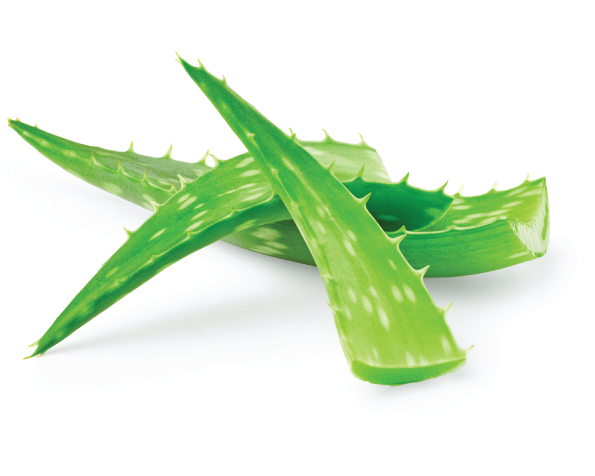
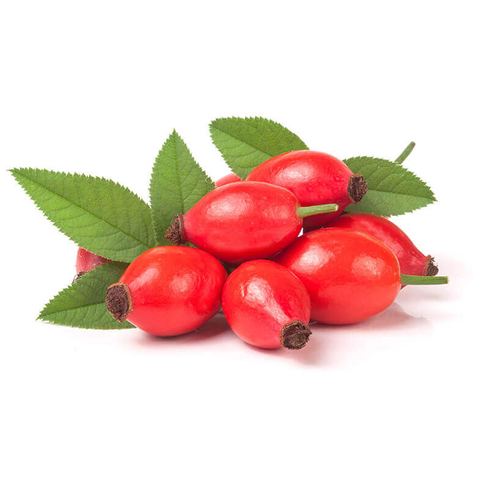
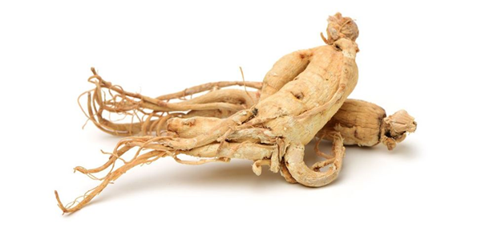
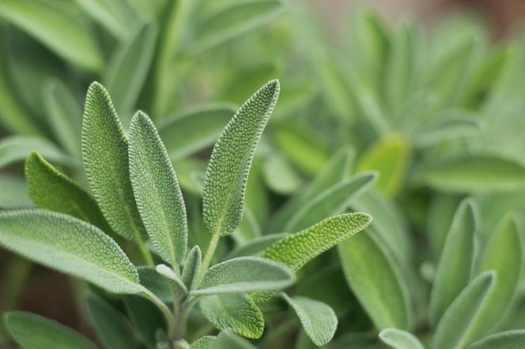
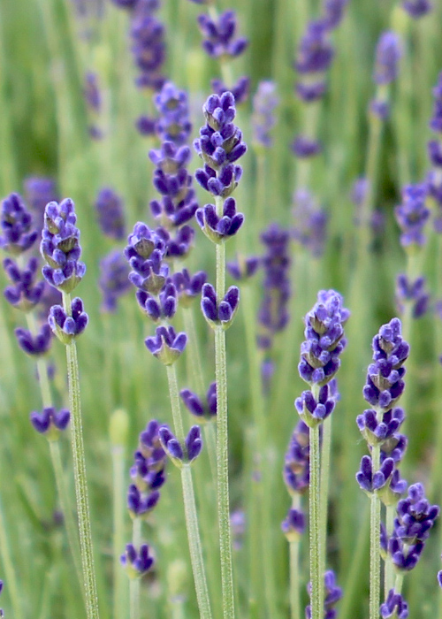

Zastosowanie roślin w kosmetykach
Związki zawarte w roślinach są cennym składnikiem wielu kosmetyków. Większość konsumentów coraz częściej zwraca uwagę na skład kupowanych przez siebie produktów, dlatego też kosmetyki roślinne szczycą się tak dużym zainteresowaniem - są produktami naturalnymi, a przynajmniej zawierają składniki naturalnego pochodzenia.
Jakie rośliny znajdują zastosowanie w kosmetologii? Na co wpływają drogocenne związki roślinne? W jakich produktach dostępne są rośliny mające duży wpływ na pielęgnację cery? Zastosowanie przykładowych roślin znajdziesz poniżej, a składniki tych roślin dzięki, którym są one tak cenne znajdziesz na stronie: Właściwości wybranych roślin
RUMIANEK: Rumianek działa przeciwzapalnie, przeciwbakteryjnie, przeciwalergicznie i rozkurczowo na mięśnie gładkie jelit, pomagając tym samym w problemach trawiennych i wzdęciach. Działa także uspokajająco i odprężająco. W kosmetologii rumianku powszechnie używa się do produkcji kremów, maści, żeli pod oczy, a także szamponów, toników, płynów do kąpieli, maseczek i mleczek do twarzy. Ponadto napar rumiankowy oczyszcza skórę, łagodząc podrażnienia. Kosmetyki z rumiankiem doskonale sprawdzą się na skórze alergicznej i wrażliwej.
NAGIETEK: Nagietek ułatwia gojenie się ran, leczenie stanów zapalnych oraz ma działanie przeciwgrzybiczne. Napar przygotowany z nagietka jest polecany przy problemach z dwunastnicą oraz zaburzeniach miesiączkowania. Nagietek można również służyć do płukania jamy ustnej i gardła, a sama roślina jest używana także w produkcji past do zębów. Maść z nagietka działa kojąco na skórę. Do pielęgnacji cery nagietek stosuje się jako składnik mleczek do demakijażu, toników i kremów, ponieważ regeneruje szorstką, popękaną skórę, likwidując zaczerwienienia. Ekstrakt z nagietka poleca się osobom z cerą trądzikową, ponieważ zawiera on właściwości bakteriobójcze i przeciwzapalne.

ALOES: Aloes zawiera związki zmniejszające ból, poprzez działanie przeciwzapalne. Znacznie przyspiesza gojenie i zamykanie się ran. Roślina posiada właściwości przeciwutleniające i przeciwgrzybicze. Aloes ma regenerujące działanie na skórę, nawilża ją, może także pomóc w usuwaniu trądziku, poprawia mikrokrążenie, utrzymuje prawidłowe pH skóry, ujędrnia ją i wygładza, dotlenia i regeneruje. Wykorzystuje się go jako serum do włosów, dodatek do szamponów, odżywki, maski do włosów, żel po opalaniu, jako baza pod krem lub składnik kremu pielęgnacyjnego. Żel z aloesu można stosować również jako łagodzącą i nawilżającą maseczkę do twarzy.
MIŁORZĄB: Miłorząb oczyszcza organizm z ewentualnych toksyn, spowalnia proces starzenia się, wspiera funkcjonowanie układu krążenia oraz układu odpornościowego, Łagodzi stany zapalne, poprawia koncentrację i pamięć. Wywar z miłorzębu korzystnie wpływa na narządy wewnętrzne, w tym mózg. Substancje zawarte w tej roślinie spowalniają proces starzenia się organizmu. W kosmetologii miłorząb jest pożądany jako produkt o działaniu przeciwzmarszczkowym, ujędrniającym skórę, chroniącym przed promieniowaniem UV. Jest doskonałym produktem do pielęgnacji oczu, ponieważ zapobiega pękaniu naczynek. Stosuje się go także do kremów dla skóry dojrzałej, czy w wielu maseczkach do twarzy i oczu, ponieważ powoduje efekt odmładzania skóry i zmniejszenie jej opuchlizny. Miłorząb działa również pozytywnie na mikrokrążenie, dlatego zaleca się go osobom posiadającym cerę naczynkową.
DZIKA RÓŻA: Dzika róża była dawniej używana m.in. w leczeniu wścieklizny. W dzisiejszych czasach stosuje się ją raczej na niestrawność, ból gardła, stany zapalne układu moczowego, czy poprawę pracy wątroby i nerek - działa moczopędnie, oczyszcza układ moczowy. Wzmacnia ona również naczynia krwionośne. Dzika róża ma także pozytywny wpływ na skórę, a obecna w kosmetykach rozjaśnia skórę, wyrównuje jej koloryt i odżywia. Używa się jej do produkcji kremów, toników, żeli pod prysznic oraz mydeł. Olejek różany odżywia skórę, przez co polecany jest osobom o wrażliwej i suchej cerze, jak i również cerze tłustej i trądzikowej.
CZARNY BEZ: Czarnego bzu używa się przy leczeniu migren, działa on również oczyszczająco, regulując pracę układu trawiennego i nerek. Działa przeciwcukrzycowo, przeciwnowotworowo, wpływa korzystnie na oczy, jest często stosowany w stanach grypowych. Czarny bez łagodzi podrażnienia, oczyszcza, zwalcza stany zapalne, pobudza ukrwienie skóry, dlatego jest stosowany w kosmetykach do cery trądzikowej, młodej, tłustej i mieszanej, ale także do skóry bardziej dojrzałej, skłonnej do powstawania zmarszczek.

MIĘTA: Mięta działa bakteriobójczo, rozkurczowo, przeciwzapalnie, pobudza układ trawienny i obniża ciśnienie krwi. Miętę stosuje się więc przy zaburzeniach związanych z trawieniem, wzdęciach, migrenach i nerwobólach. Olejek z mięty wspomaga oddychanie, działa przeciwdrobnoustrojowo i inhalacyjnie - łagodzi kaszel i przeziębienia. W przemyśle kosmetycznym miętę stosuje się jako składnik szamponów, perfum oraz balsamów. Olejek miętowy odświeża i łagodzi skórę twarzy, używa się go w kosmetykach do cery tłustej i trądzikowej. Rozświetla skórę, zmniejszając wydzielanie sebum. Mięta oczyszcza i odkaża także pory.

ŻEŃ-SZEŃ: Żeń-szeń działa przeciwzapalnie, przeciwcukrzycowo, poprawiając także odporność, samopoczucie i zwiększając odporność na stres. Korzeń żeń-szenia posiada działanie przeciwzakrzepowe, pobudza pracę serca, obniża poziom cukru we krwi. Dotlenia i odżywia komórki skóry regenerując je, poprawia krążenie i witalność, naturalnie rozświetla cerę, działa przeciwzmarszczkowo oraz wyrównuje koloryt skóry.
MELISA: Melisa przede wszystkim działa uspokajająco, ale również wspomaga trawienie, łagodzi bóle miesiączkowe, poprawia pamięć i koncentrację, działa przeciwgrzybicznie i przeciwbakteryjnie. Stosuje się ją w napięciach nerwowych, bezsenności, grypie, przeziębieniach, dolegliwościach płucnych, nerwicy i zaburzeniach rytmu serca. W kosmetologii ekstrakt z melisy działa przeciwstarzeniowo, łagodząco i kojąco, dlatego często spotkać można ją w produktach do skóry wrażliwej.

SZAŁWIA: Szałwia pozytywnie wpływa na samopoczucie, regulacje miesiączkowania oraz menopauzy. Poprawia pracę układu trawiennego, pobudza wydzielanie soku żołądkowego, pomaga w leczeniu niestrawności i wzdęć, obniża poziom cukru we krwi, działa grzybobójczo, hamuje rozmnażanie się niektórych bakterii odpowiedzialnych za rozwój infekcji. Olejki eteryczne zawarte w szałwi pomagają w leczeniu wyprysków, trądziku, grzybicy i łuszczycy. Szałwia opóźnia proces starzenia się skóry i powstawanie zmarszczek.
LAWENDA: Lawenda pomaga przy bezsenności, działa uspokajająco, przeciwbólowo, przeciwzapalnie, regenerująco i wyciszająco. Rozkurcza mięśnie gładkie, pobudza wydzielanie soku żołądkowego. Lawenda pomaga przy nadmiernym wypadaniu włosów, wzmacniając cebulki, hamuje łupież i nadmierne przesuszanie się skóry. Nawilża skórę, poprawia jej koloryt, wspomaga proces odnowy naskórka, tonizuje cerę, przyspiesza się gojenie i łagodzi podrażnienia. Lawendę stosuje się w kosmetykach do cery problematycznej, czyli podrażnionej, przesuszonej i trądzikowej. Ze względu na swoje właściwości regenerujące i wygładzające polecana jest również dla skóry dojrzałej. Lawenda zmniejsza wydzielanie łoju i przyspiesza gojenie się ran. Często więc znajduje zastosowanie jako składnik toników i kremów, także pod oczy.
